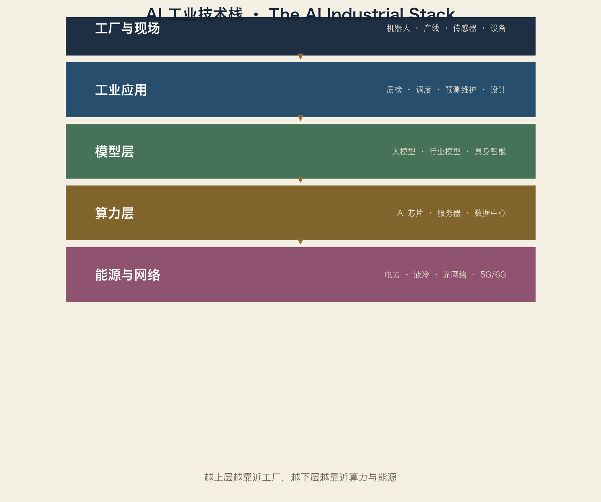

3.1 AI 芯片：新工业的“发动机”
| 中心 | 代表 | 定位 |
|---|---|---|
| 硅谷 | Nvidia、AMD、Google TPU | 全球 AI 芯片定义者 |
| 台湾 | TSMC | 制造一切先进芯片 |
| 深圳/上海 | 华为昇腾、寒武纪 | 中国自主算力 |
| 海法 | Intel、Habana | 以色列 AI 芯片带 |
| 奥斯汀/凤凰城 | Samsung、Intel、TSMC 美国厂 | 美国制造回流 |
数据：Nvidia 2024 财年营收约 609 亿美元（2023/24）；2025 财年（截至 2025 年 1 月）约 1305 亿美元——全球 AI 芯片需求的中心（约数）。
3.2 数据中心：新的“工厂”
数据中心本质上是“算力工厂”：
输入：电、水（冷却）、光纤
输出：推理、训练、云服务
瓶颈：电力、土地、散热
全球数据中心新地图：
美国：弗吉尼亚北部（全球最大数据中心走廊）、得克萨斯
欧洲：法兰克福、伦敦、都柏林、北欧（绿电）
中国：张家口、贵阳、韶关、和林格尔（“东数西算”）
中东：沙特/阿联酋主权基金大举建设
3.3 机器人：AI 的“身体”
协作机器人：优傲（丹麦）、节卡（上海）、遨博（北京）
工业机器人：发那科、ABB、库卡、埃斯顿
人形机器人：特斯拉 Optimus、Figure（美国）、宇树（杭州）、优必选（深圳）
核心部件：减速器（纳博特斯克、绿的谐波）、伺服（安川、汇川）、
力传感器、AI 模型
人形机器人 2024–2026 年仍以原型与试产为主，但产业链已经开始布局：谁有减速器、伺服、电池、AI 模型，谁就有资格。
3.4 新地图上的“卡脖子”
AI 芯片：先进制程（台积电）+ HBM 存储（SK海力士/三星）+ 先进封装
数据中心：电力变压器、液冷、光模块
机器人：精密减速器、力矩传感器、运动控制算法
这些节点，就是第五卷的“工业文明索引”需要新增的词条。
3.5 能源：新地图的隐藏约束
一个大型 AI 数据中心的耗电量 ≈ 一座小城市
所以 AI 时代的工业地图，必须加上：电厂、电网、储能、核电
这也是为什么英伟达的伙伴列表里开始出现电力公司，而中国“东数西算”把数据中心放在电便宜的地方。
词汇笔记（Vokabelnotiz）
| 中文 | Deutsch | English |
|---|---|---|
| AI 芯片 | KI-Chip | AI chip |
| 数据中心 | Rechenzentrum | Data center |
| 液冷 | Flüssigkeitskühlung | Liquid cooling |
| 人形机器人 | humanoider Roboter | Humanoid robot |
| 东数西算 | Rechenkraft nach Westen | East-Data-West-Computing |